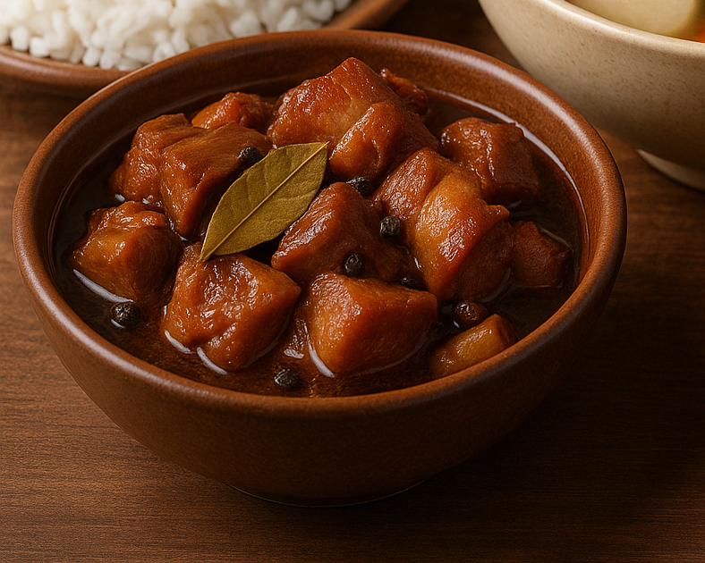

← Back to Home
Adobo

The iconic dish that defines Filipino home cooking.
The iconic dish that defines Filipino home cooking. Every Filipino
household has its own version of adobo—but the essentials remain the same:
soy sauce, vinegar, garlic, bay leaves, and pepper. It can be made with
pork, chicken, or both.
Ingredients:
- 1 kg pork belly or chicken (or both), cut into chunks
- 1/2 cup soy sauce
- 1/2 cup vinegar
- 1 head garlic, crushed
- 1 tsp whole peppercorns
- 2-3 bay leaves
- 1 tbsp brown sugar (optional)
- Water as needed
- Salt and oil
Steps:
-
Marinate meat in soy sauce, garlic, and peppercorns for 30 minutes.
-
Place in a pot, add vinegar and bay leaves. Do not stir. Let it boil for
5 minutes.
- Lower heat, cover, and simmer until tender (30–45 minutes).
-
Optionally fry the meat for a dry-style adobo, then return it to the
sauce.
- Serve with rice.
← Back to Home